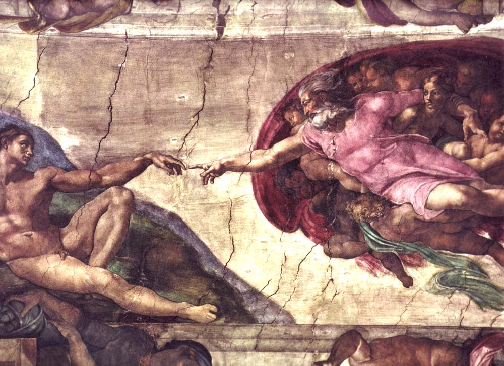

Para breviedade vamos chamá-lo de Big-Dev
Imagine que em algum lugar do universo existe uma entidade que possui o merito do titulo, melhor programador do universo. Esse ser já não precisa mais de computadores, ele conhece a computação de verdade, a que transcende qualquer maquina que possamos inventar, ele não se preocupa mais com a complexidade dos algoritmos porque ele consegue realizar qualquer operação em tempo constante, não existem tarefas da sprint que possam ser atrasadas porque o próprio conceito de engenharia de software não se mais aplica visto que todo código escrito atende completamente a demanda dos stakeholders e não precisa de testes ou refactoring pois é perfeito.
Não apenas no parte técnica da nossa profissão que Big-Dev é o melhor, afinal, como poderia o melhor programador de todos os tempos não conseguir trabalhar em time? os peers dessa entidade atingem produtividades astronomicas e conseguem se tornar semi-deuses apenas com poucos ensinamentos, superando qualquer humano ou mortal que já tenha tentado escrever linhas de código.
Esse programador é honesto e simples, tudo que ele faz não é mais complexo do que precisa ser ou mais abstrado do que o necessario, tudo tem um sentido e uma aplicação que ao ser notada torna todo o código como musica, em harmonia e perfeição.
Todos os programadores se beneficiariam se tentassem se tornar o Melhor Programador De Todos Os Tempos, mesmo que sendo uma tarefa impossivel - por definição não existe mais do que um melhor programador de todos os tempos - acredito que possuir essa vontade é tudo o que um mortal precisa para alcançar de maneira factivel esse 'divino'
Antes do seu próximo commit ou code-review se pergunte, "O que o Maior Programador De Todos Os Tempos faria se estivesse no meu lugar?" porque por mais que nossa meta seja impossivel, durante algum tempo se você estiver pensando verdadeiramente nessa pergunta você pode se tornar esse programador, mesmo que apenas em um pequeno bug-fix; Valerá a pena (provavelmente).
